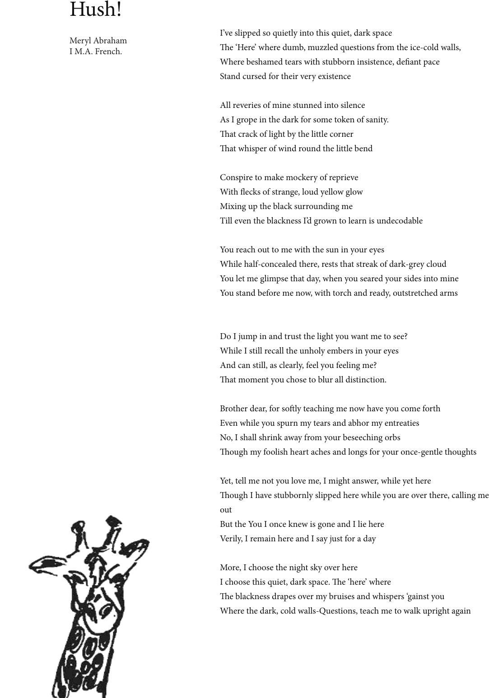

I’ve slipped so quietly into this quiet, dark space
e ‘Here’ where dumb, muzzled questions from the ice-cold walls,
Where beshamed tears with stubborn insistence, deant pace
Stand cursed for their very existence
All reveries of mine stunned into silence
As I grope in the dark for some token of sanity.
at crack of light by the little corner
at whisper of wind round the little bend
Conspire to make mockery of reprieve
With ecks of strange, loud yellow glow
Mixing up the black surrounding me
Till even the blackness I’d grown to learn is undecodable
You reach out to me with the sun in your eyes
While half-concealed there, rests that streak of dark-grey cloud
You let me glimpse that day, when you seared your sides into mine
You stand before me now, with torch and ready, outstretched arms
Do I jump in and trust the light you want me to see?
While I still recall the unholy embers in your eyes
And can still, as clearly, feel you feeling me?
at moment you chose to blur all distinction.
Brother dear, for soly teaching me now have you come forth
Even while you spurn my tears and abhor my entreaties
No, I shall shrink away from your beseeching orbs
ough my foolish heart aches and longs for your once-gentle thoughts
Yet, tell me not you love me, I might answer, while yet here
ough I have stubbornly slipped here while you are over there, calling me
out
But the You I once knew is gone and I lie here
Verily, I remain here and I say just for a day
More, I choose the night sky over here
I choose this quiet, dark space. e ‘here’ where
e blackness drapes over my bruises and whispers ‘gainst you
Where the dark, cold walls-Questions, teach me to walk upright again
Hush!
Meryl Abraham
I M.A. French.